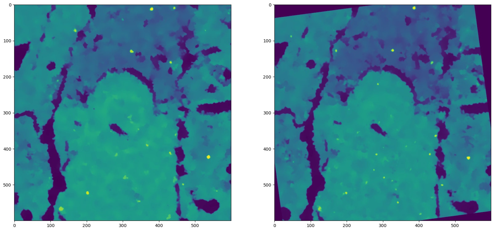

Чё такое?
soil-align — это библиотека и программа для выравнивания трёхмерных
изображений пористых сред. Её принцип действия основан на расчёте ключевых
точек изображения, инвариантных относительно аффинных преобразований,
сопоставлении их на двух изображениях (названных входным и референсным),
нахождении преобразования, переводящего входное изображение в референсное, и
применении этого преобразования к входному изображению.
Зависимости:
- SIFT3D версия 2.0+
- faiss (принадлежит компании Meta, признанной в РФ экстремистской организацией)
- SBCL (другая реализация CL не подойдёт)
- OpenBLAS
- LMDB
Как установить:
- Установить quicklisp
- Склонировать этот репозиторий в
local-projects - В REPL выполнить
(ql:quickload :soil-align) - Для сборки утилиты командной строки выполнить
(asdf:make :soil-align)
Пример работы (показаны 2D срезы):

Используемые алгоритмы:
- B. Rister, M. A. Horowitz and D. L. Rubin, "Volumetric Image Registration From Invariant Keypoints," in IEEE Transactions on Image Processing, vol. 26, no. 10, pp. 4900-4910, Oct. 2017. doi: 10.1109/TIP.2017.2722689
- Dong, Wei, Charikar Moses, and Kai Li. "Efficient k-nearest neighbor graph construction for generic similarity measures." Proceedings of the 20th international conference on World wide web. ACM, 2011.
- CLAHE
- RANSAC